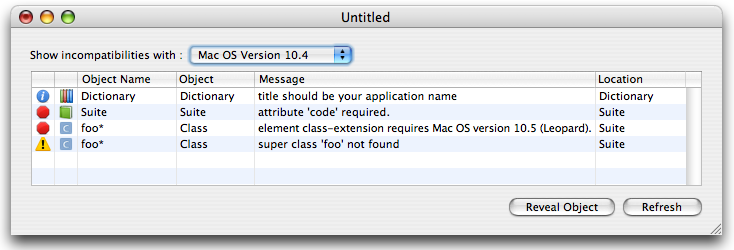

Sdef Editor
v 1.5.4
Version 1.5.4
- • Add "insert-at-beginning" attribute support.
- • Add "hidden" attribute support for types.
- • Correct 10.4 copatibility issue.
Version 1.5.3
- • Update parse for better target version detection.
- • The validator no longer report error when using xml id to refere to a class.
- • Autocompletion list are sorted.
- • Improve symbol browser.
- • Rewrite low-level parser for xinclude (read-only) support.
Version 1.5.2
- • Correct bug wich prevent pure resource file importation.
Version 1.5.1
- • Change in “responds-to” to support empty “command” attribute.
Version 1.5
- • Rewamped Interface.
- • Improve synonyms support.
- • Improve Invalid Sdef Document support.
- • Add support for Leopard extensions.
- • Add a new Sdef validator to check sdef document validity.

- • Rewrite “aete” and .scriptSuite importer (faster and more accurate).
- • Add versioning system that allows to choose target system version (Tiger or Leopard).
Version 1.3.3
- • Correct problem with deletion of the first item of a list.
- • Correct problem with type editor in class properties.
- • Correct problem with entities escaping.
- • Misc minor bugs corrections and improvments.
Version 1.3.2
- • Add "type" attribute in class (look like Apple support it, but it is not in the sdef DTD actually).
- • Correct problem with encoding when exporting as HTML.
- • Misc minor bugs corrections and improvments.
Version 1.3.1
- • Update Parser to report errors while loading a file.
- • Add basic support for invalid documents.
- • Update tree view to allows inline edition (option + clic on an item).
- • Add "Skeleton" definition in Standards Suites.
- • Correct a bug in drag & drop that allows to drop everything in Type group.
- • Universal Binary.
Version 1.3
- • Rewrite Parser to handle Panther and Tiger sdef files.
- • Update UI to handle new value-type and record-type elements.
- • Update UI to handle complex Types introduced in Tiger.
- • Add "Export Using Old Format" to create Panther sdef files.
- • Add "Open Application Definition…" (Tiger only).
- • Correct problem with cocoa elements in synonym.
- • Add undo support on synonyms, and add fields to edit cocoa element in synonym.
Version 1.2
- • Add Symbol Browser (check the windows menu).
- • Add export as .asdictionary.
- • Add export using template (as HTML, RTF, …).
- • Global Improvement.
Version 1.1
- • Add .scriptSuite import.
- • Add 'aete' resources import.
- • Add "sdp" Tool path and "Rez" Tool path in preferences.
- • Add Copy/Paste support.
- • Add Drag & Drop support in Elements tree.
- • Add "date" in base types.
- • Improve cancel support.
- • Improve automatic item selection in tree view.
Version 1.0.1
- • Correct bug that prevent Content->Cocoa Name edition.
- • Add Target System Version in export panel (see sdp -V).
Version 1.0
- • First Release.
- • Edit sdef xml files.
- • Export as .scriptSuite & .scriptTerminology.
- • Export as 'aete' resources (.r) and 'aete' compiled resources (.rsrc).